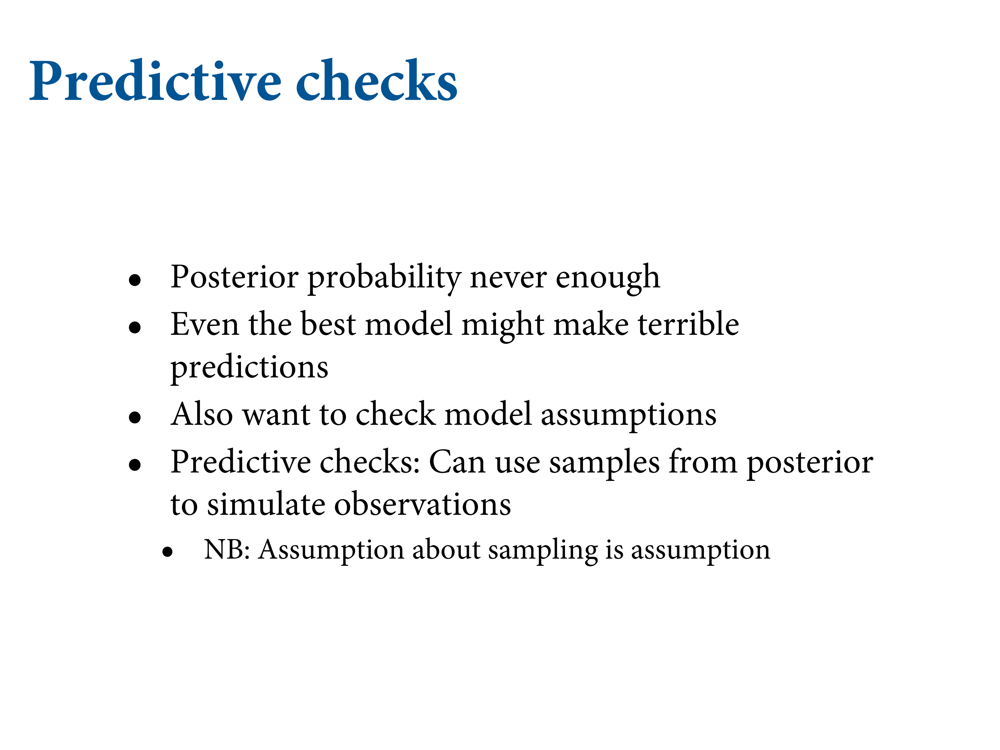
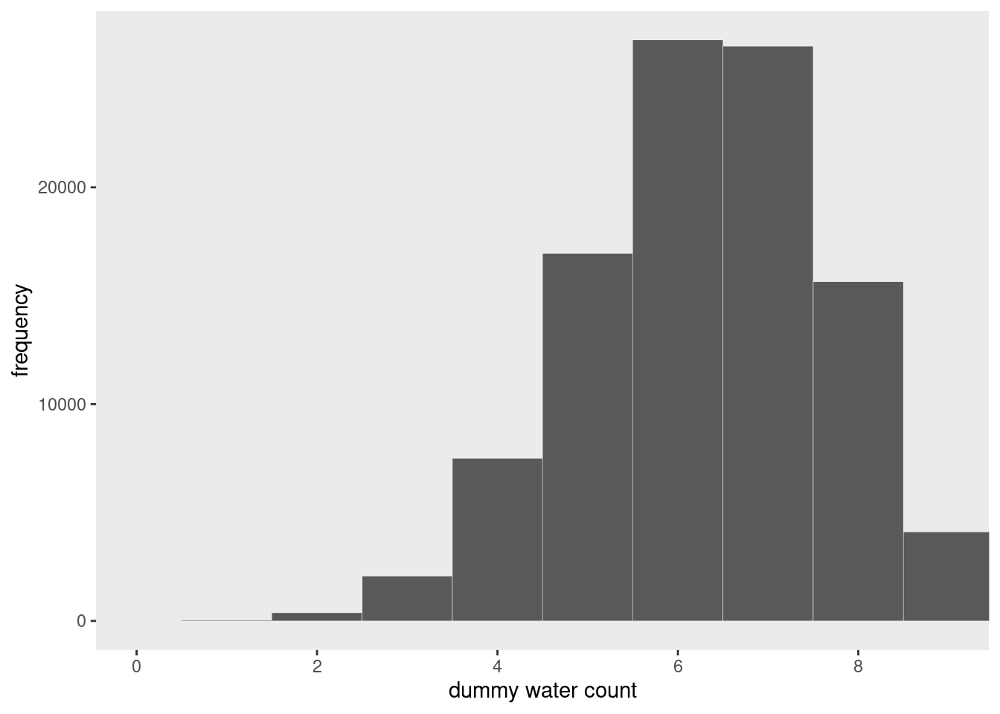

3.3 Sampling to simulate prediction

We’ve got the model and now we want to know what it expects. So we get it to simulate predictions.
3.3.1 Dummy data
Suppose \(N\) = 2, two tosses, then there are only three possible observations: 0, 1 and 2 water. You can compute the probability of each for any given value of \(p\). Let’s use \(p\) = 0.7, about the true proportion of water on the Earth.
tibble(n = 2,
`p(w)` = .7,
w = 0:2) %>%
mutate(density = dbinom(w, size = n, prob = `p(w)`))## # A tibble: 3 × 4
## n `p(w)` w density
## <dbl> <dbl> <int> <dbl>
## 1 2 0.7 0 0.09
## 2 2 0.7 1 0.42
## 3 2 0.7 2 0.49Now we’ll simulate observations using these probabilities.
rbinom(1, size = 2, prob = 0.7)## [1] 2That 1 means “1 water in 2 tosses.” You can simulate a set of 10:
set.seed(3)
rbinom(10, size = 2, prob = 0.7)## [1] 2 1 2 2 1 1 2 2 1 1Let’s generate 10,000 just to verify 0, 1 and 2 appear in proportion to their likelihoods:
# how many would you like?
n_draws <- 1e5
set.seed(3)
d <- tibble(draws = rbinom(n_draws, size = 2, prob = .7))
d %>%
count(draws) %>%
mutate(proportion = n / nrow(d))## # A tibble: 3 × 3
## draws n proportion
## <int> <int> <dbl>
## 1 0 9000 0.09
## 2 1 42051 0.421
## 3 2 48949 0.489Let’s now simulate the sample size as before, with 9 tosses
set.seed(3)
d <- tibble(draws = rbinom(n_draws, size = 9, prob = .7))
# the histogram
d %>%
ggplot(aes(x = draws)) +
geom_histogram(binwidth = 1, center = 0,
color = "grey92", size = 1/10) +
scale_x_continuous("dummy water count",
breaks = seq(from = 0, to = 9, by = 2)) +
ylab("frequency") +
coord_cartesian(xlim = c(0, 9)) +
theme(panel.grid = element_blank())
Play around with different values of size and prob:
n_draws <- 1e5
simulate_binom <- function(n, probability) {
set.seed(3)
rbinom(n_draws, size = n, prob = probability)
}
d <-
crossing(n = c(3, 6, 9),
probability = c(.3, .6, .9)) %>%
mutate(draws = map2(n, probability, simulate_binom)) %>%
ungroup() %>%
mutate(n = str_c("n = ", n),
probability = str_c("p = ", probability)) %>%
unnest(draws)
head(d)## # A tibble: 6 × 3
## n probability draws
## <chr> <chr> <int>
## 1 n = 3 p = 0.3 0
## 2 n = 3 p = 0.3 2
## 3 n = 3 p = 0.3 1
## 4 n = 3 p = 0.3 0
## 5 n = 3 p = 0.3 1
## 6 n = 3 p = 0.3 1d %>%
ggplot(aes(x = draws)) +
geom_histogram(binwidth = 1, center = 0,
color = "grey92", size = 1/10) +
scale_x_continuous("dummy water count",
breaks = seq(from = 0, to = 9, by = 2)) +
ylab("frequency") +
coord_cartesian(xlim = c(0, 9)) +
theme(panel.grid = element_blank()) +
facet_grid(n ~ probability)
3.3.2 Model checking
Means: 1. Ensuring the model fitting worked correctly; and 2. Evaluating the adequacy of a model for some purpose.
Let’s consider three values from it. If we took the true value A and simulated a bunch of globe tosses, what would the sampling distribution look like?


If it were B instead, it would centre around 6.

We want a posterior predictive distribution which mixes all these together in proportion to the posterior probability of each value of \(p\). We want the actual predictions of the model are not any one of these sampling distributions, they’re all of them mixed together in the proper weights to the improbable weights of \(p\) are given little weight and vice versa.

The probabilities come from the samples from the posterior distribution.
w = rbinom(1e4, size = 9, prob = .6)
rethinking::simplehist(w)
This generates 10,000 simulated predictions of 9 globe tosses (size = 9), assuming \(p\) = 0.6. The predictions are stored as counts of water.
To propagate parameter uncertainty into these predictions, replace the value of 0.6 with samples from the posterior.
p_grid = seq(from = 0, to = 1, length.out = 1000)
prob_p = rep(1, 1000)
prob_data = dbinom(6, size = 9, prob = p_grid)
posterior = prob_data * prob_p
posterior = posterior / sum(posterior)
samples = sample(p_grid, prob = posterior, size = 1e4, replace = T)
w = rbinom(1e4, size = 9, prob = samples)
rethinking::simplehist(w)